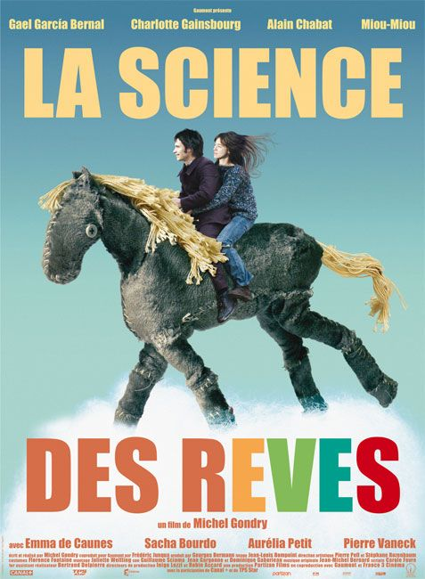

- DIRECTOR
- CAST
- REVIEWS
The Science of Sleep

수면의 과학
Following the death of his father in Mexico, Stéphane Miroux,
a shy insecure young man, agrees to come to Paris to draw closer to his widowed mother Christine.
He lands a boring job at a calendar-making firm and falls in love with his charming neighbor Stéphanie.
But conquering her is no bed of roses for the young man
and the only solution he finds to put up with the difficulties he is going through is escape into a dream world...